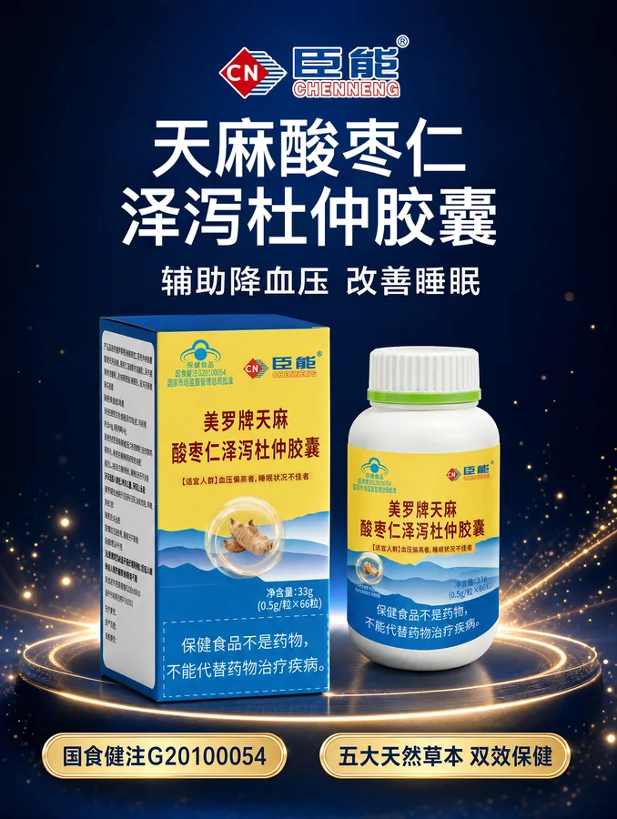
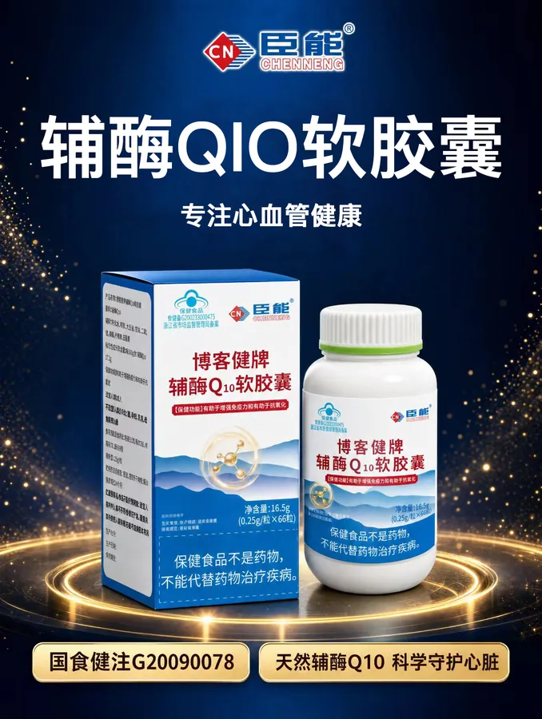

CHENNENG COLLECTION本草 · 营养 · 护理


用心了解每一份所需01 — 12
12款全系产品
9个关注主题
2类产品资料
保健食品 9 款·医疗器械 3 款
品牌短片 / 24 SECONDS
一人一方，关照每一天。
从湖湘本草的灵感，到日常营养与护理。
用一段短片，认识臣能对不同健康需求的关注。
01 / 产品总览
从关注出发，慢慢了解。
按主题、类别或名称查找。
点开产品，查看完整资料与使用提示。
关注主题
暂时没有找到相符的产品
试试更短的关键词，或重新选择类别与主题。
主题分类仅用于浏览；产品功能、适用范围及使用方式，以产品标签和说明书为准。
02 / 品牌理念
山水有本。
养护有方。
臣能 · 湖湘一人一方 · AI 健康驿站
“一人一方”，始于对每一个人的关注。
以湖湘本草文化为灵感，尊重不同的健康需求。把产品的类别、配方、规格与使用提示讲清楚，让日常养护的每一步，都建立在充分了解之上。
01
看见不同
从你关心的主题开始了解。
02
读懂产品
清晰呈现每一款产品资料。
03
认真选用
结合自身情况与专业指导。
03 / 选用指南
了解清楚，再作选择。
一份简单的阅读顺序，
帮助你找到需要留意的信息。
- 01
先看产品类别
区分保健食品与医疗器械，了解产品的功能或适用范围。
按类别浏览 - 02
再读完整资料
在产品详情中查看规格、成分与批准文号，核对实物标签和说明书。
查看产品资料 - 03
留意使用提示
认真阅读适宜人群、不适宜人群及禁忌。存在疑问时，先咨询医务人员。
阅读常见问题
阅读之前
你可能想了解
如何找到我关注的产品？
选择一个关注主题，再按保健食品或医疗器械筛选，也可以直接搜索产品名称、成分或批准文号。主题帮助你定位资料，具体选用仍需结合说明书与自身情况。
这里的“一人一方”代表什么？
它表达臣能关注不同人群健康需求的品牌理念。本页提供产品资料浏览与查询；涉及疾病诊断、治疗或具体使用方案，请咨询医务人员。
查看产品时，需要重点留意哪些信息？
建议先看产品类别、功能或适用范围，再阅读使用方式、人群限制与注意事项。保健食品不是药物，不能代替药物治疗疾病；医疗器械请在医务人员指导下使用。